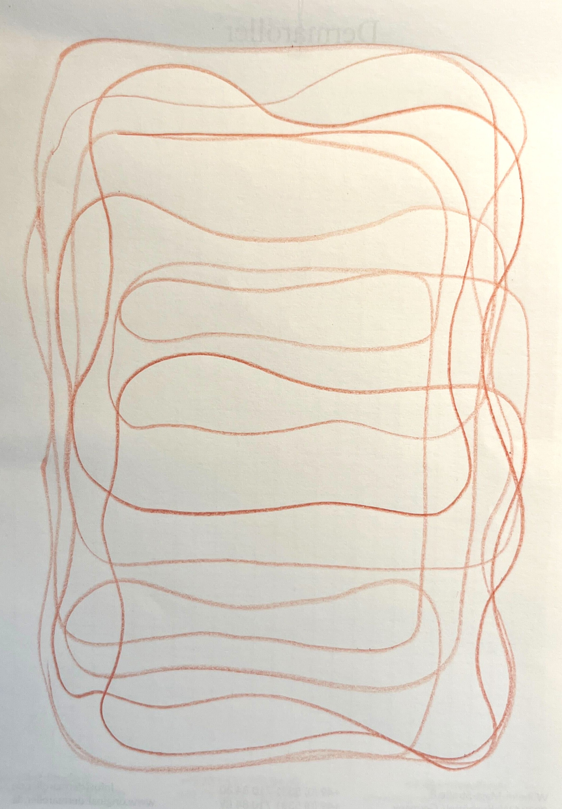
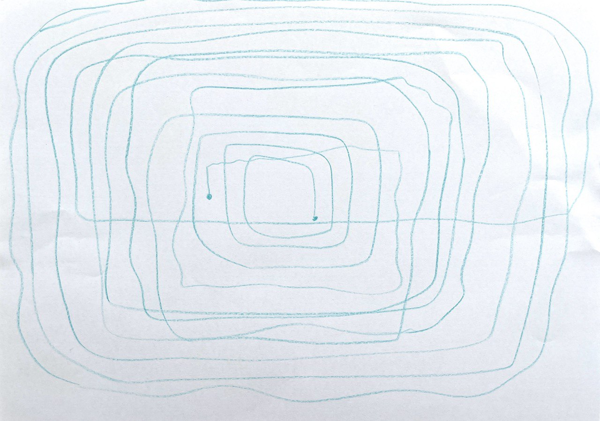
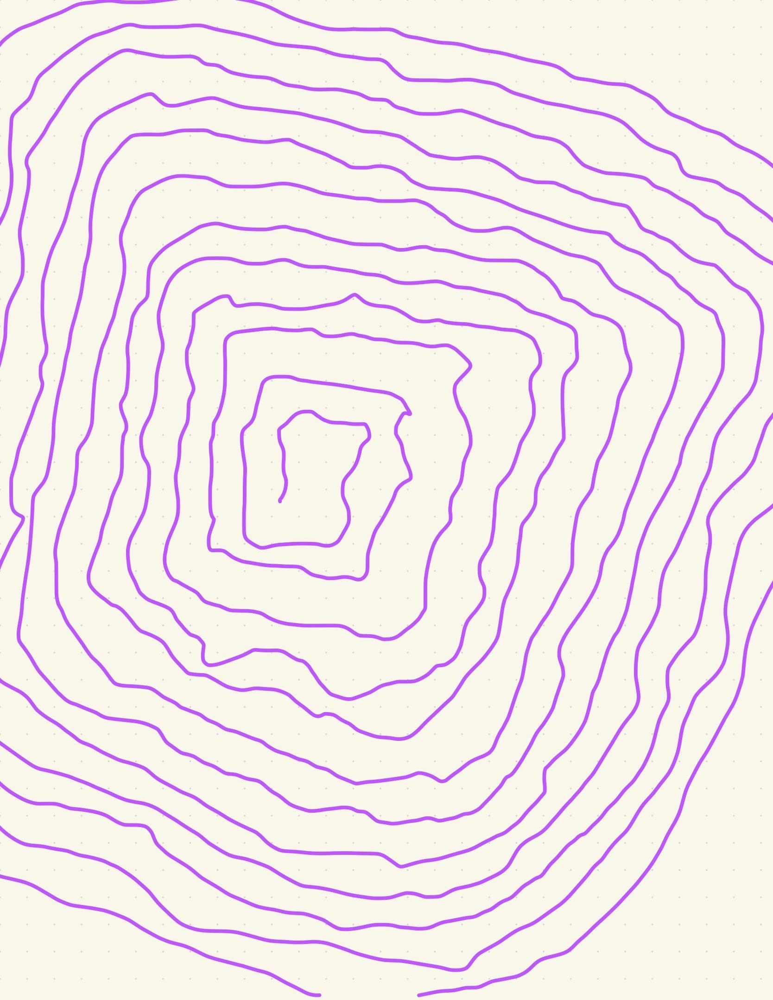
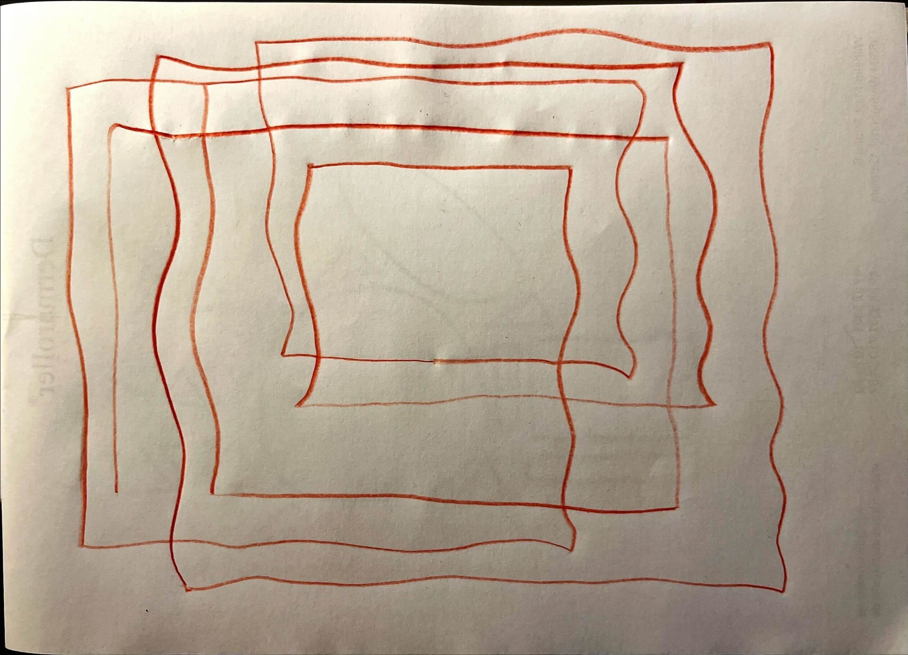
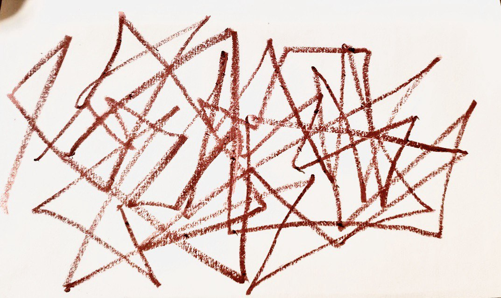
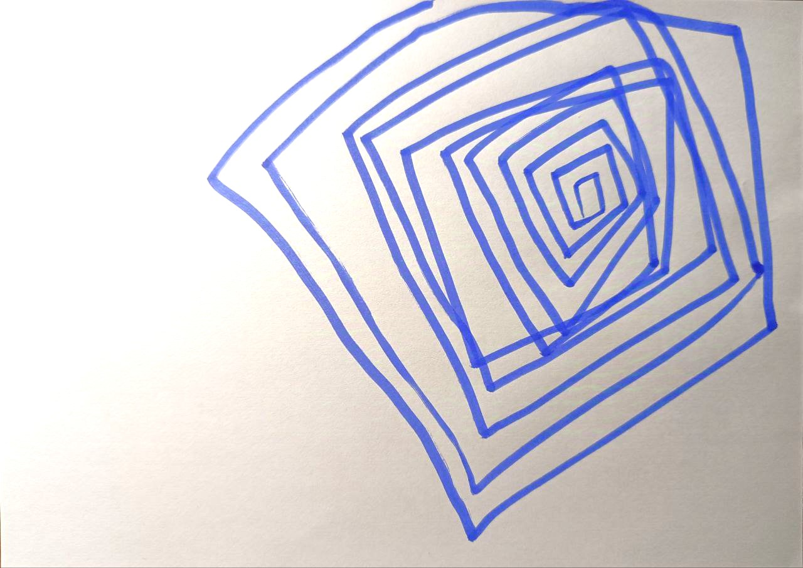
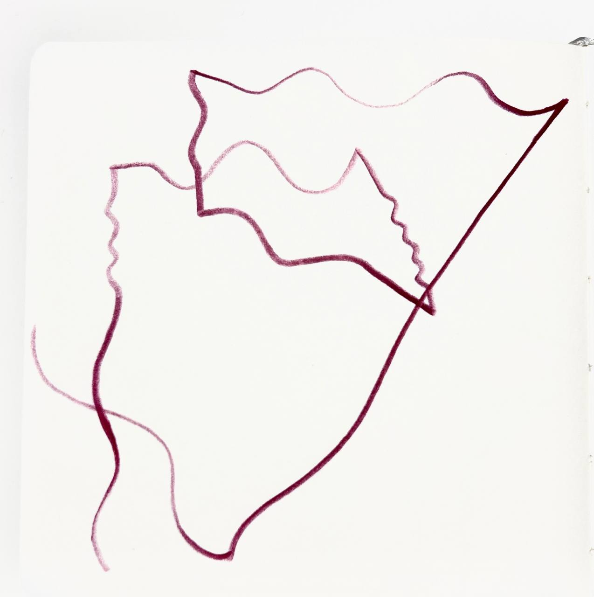

What is it, how it works and which results is possible to get.
Our first semester started with exploring the concept of algorithms — understanding how they work and what critical steps we must include to achieve the exact, anticipated results.
For this assignment, no laptops or devices were required. All we needed was a piece of paper and a pen or pencil. Within a specific time limit, we put all our focus into drafting our instructions. Once the time was up, we exchanged our algorithms to test each other’s work and share our unique approaches.
My first set of rules was the following:
----------------------------------------
choose the color you like and the tool that is most convenient for you to draw. One minute is given for the task. Draw a continuous, slightly wavy line starting anywhere on the sheet. The line must always go in all directions in order: up, right, down, and left. Choose the length for each direction as you like. Repeat these steps until time runs out. If possible, try to periodically change the force of pressure on the tool when drawing.



After receiving the initial drawings from my classmates, I realised how differently people interpret the same text. Because I had a much more precise picture in my own head, I decided to refine my algorithm and introduce new rules. There is the updated text, and here are the results. They looked much more interesting and distinct, yet something was still missing.
Choose the color you like and the tool that is most convenient for you to draw. One minute is given for the task. Draw a continuous, slightly wavy line starting anywhere on the sheet. The line must always go in all directions in order: up, right, down, and left. Choose the length for each direction as you like. Repeat these steps until time runs out. Periodically change the force of pressure on the tool when drawing. Lines can overlap or cross each other. When changing direction, the lines should be pointy and oblique between two directions.

When presenting the next iteration, I figured that the better I structured the description, the more accurate the resulting ornaments would be. Therefore, I highlighted specific keywords to gently guide people toward the intended aesthetic decisions.
Choose the color you like and the tool that is most convenient for you to draw. 1 minute is given for the Draw a continuous, wavy line starting anywhere on the sheet; • the line must always go in all directions in order: up, right, down, and left; • choose the length and slope for each direction as you like; • periodically change the force of pressure on the tool when drawing. Repeat these steps until time runs out. Lines can overlap or cross each other. When changing direction, the line should be pointy.


Following my final correction, I received the last result, and I am genuinely satisfied with it! It follows every single rule perfectly, it is precise, yet it was executed with true enthusiasm — as if the creator decided to give freedom to their hands to craft something truly extraordinary.

This assignment taught me to be more direct and precise when communicating a specific vision. But at the same time, it made me understand and accept that even when I have a detailed plan, idea, or algorithm, I should let go of rigid expectations. We all think differently, and even when we are given the exact same rules to play by, we always add our own unique charm to the final piece.